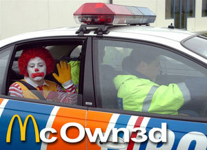

McDonald's
 De: La Frikipedia, la enciclopedia extremadamente seria.
De: La Frikipedia, la enciclopedia extremadamente seria.
| De la serie empresas malignas:
|
| McDonald's, Mcm@*#$a, m@*#$onalds, McPolla, McDóllar, McFucklds, McPotals, McOwned, Mcg&#%#$#las, McWey, McBoludo, Mcm@*#$aDiluida
|
|
|
| Perteneciente al grupo:
|
No pueden estar mas empresas porque de lo gorda que esta lo ocupa todo.
|
| Se dedica a:
|
Engordarnos a todos.
|
| País de origen:
|
Estados Unidos
|
| Año de fundación:
|
3423 d. D.C.N.
|
| Super Presidente:
|
Ronald McDonald
|
| Nivel de maldad:
|
Tanta como las calorías de sus productos.
|
| Empresas absorbidas:
|
Todos los que tragan ahí
|
| Número de empleados:
|
Un montón de veinteañeros con acné y sin oportunidades en la vida.
|
| Atentados contra la humanidad
|
Hacer que la humanidad engorde al grado que la barriga no te deje ver tu p%*$* cuando mires hacia abajo.
|
| ¿Se aconseja trabajar aquí?
|
Si estas lo bastante desesperado...
|
| ¿Se recomienda el boicot?
|
Imposible muchos come m@*#$a se quedarían sin su Big Mac de cada día
|
| Cantidad de denuncias:
|
Un montón (y de las gordas).
|
| Sitio web:
|
Página oficial de McDonald's, Mcm@*#$a, m@*#$onalds, McPolla, McDóllar, McFucklds, McPotals, McOwned, Mcg&#%#$#las, McWey, McBoludo, Mcm@*#$aDiluida
|
«TONIGHT WE DINE IN HELL!!!!»
~ Leónidas invitando a sus 300 amigos a cenar a un McDonald's
Se denomina McDonald's al "establecimiento internacional" dentro del cual, uno pide una hamburguesa y cuando quieres comértela, justo al entrar en contacto con tu órgano comilondio (vulgarmente conocido como lengua), se transforma en un trozo de cuero, rancio, seco...
Así, y también con la ayuda de tácticas y estratagemas hipnóticas, atraen a los consumidores. De ahí que el logo esta en rojo y amarillo, para que te dé hambre y consumas truños a un euro. Aun no se ha encontrado la alternativa de los anuncios McDonald'sinos para que dejen de producir ataques epilépticos.
Nadie conoce el verdadero motivo de que las hamburguesas del McDonald's sean tan adictivas, pero un científico, adicto a estas hamburguesas, afirmo que contenían un ingrediente especial: el mcquinator, que, además de contener ciertos elementos ilegales, producía glandola mcDonalias, las cuales emitían ciertos impulsos al cerebro para que la persona consumiera mas cantidad de hamburguesas. En conclusión, los productos de McDolnald:
- Tienen droga
- Son adictivas
- Tienen droga
- Te engordan como animal de ganado
- Son tóxicas
- Te j#*en
En muchos países, casi la cuarta parte de la población, padece la conocida enfermedad de McDollius, sus sintomas son:
- Desayunar Big Macs
- Comer Big Macs
- Cenar Big Macs

El presidente de McDonald's y vice del imperio del mal
Para apuntarte a dicha demanda imprime esta página, firma ahí

y envíalo a la direccion.
Kentucky (Fried chicken)
Producción alimentaria
El 90,8 % de la materia prima utilizada en la producción de hamburguesas del McDollars proviene de Vietnam, Corea e Iraq, esta última de mayor calidad por su estado de conservación. El 5 %, de carne de gusanos cultivados en un laboratorio. El 4 %, del estómago de Falete. El otro 0,2 % proviene directamente de la basura. En resumen, pura m@*#$a con buen sabor.
Tambien se cree que la supuesta "carne" de los m@*#$onalds esta hecha de perros, niños guérfanos y con sida todos, atropellados (atropellados por el payaso de los cojones), residuos químicos y alguno que otro residuo de pokemon.
Se ruega a los lectores no probar nada, pero es que nada de estos productos ya que los efectos pueden ser que la persona se vuelva un payaso pedófilo y gordo, o un obeso sin remedio.
Sus efectos son los mismos que si combinas cocacola con mentos o comes en un comedor escolar (osea, cuidadín).
 Lo subieron a la patrulla porque no pasó el exámen de salubridad
Consecuencias
Su sabor es bueno pero al tragarlo tu estomago sentirá un ardor impresionante debido a la enorme cantidad de excrementos de vaca en su interior (también te salen tetas).
Cuando ya te hayas comido tropecientas mil hambum@*#$aguesas y revientes la báscula, explotarás matando a todo aquel que este al lado tuyo (incluyéndote a TI).
Alimentos favoritos de los comensales gourmette
Una niña disfrutando su comida.
- Bigm@*#$a: 452.212 calorías, es la preferida de todos.
- Bigperoverybigm@*#$a: 621.324 calorías por gramo, se recomienda consumir una por año (alto contenido de uranio).
- McPorro: cuidado con esta, te comes una y no sales del Mcm@*#$a hasta que no te desmayes por sobredosis.
- McGoloso: esta si que tiene muchas calorías casi 3.011.000 por miligramo.
- McPay de manzana: ¿Cómo es que McDonald's reutiliza la fruta podrida? Respuesta: Pay = Manzanas podridas que no merecen ir a la basura + sacarosa + harina de trigo con moho + 0.00001 mg se Sustancia sustanciosa. Agregar y cocer en un horno a 450°C durante 30 minutos.
- McZorete: no se sabe bien de que esta hecha... S: pero su elaboración tarda unos días....
- McChurry: helado de m@*#$a con trozos de caquita de
Ronal McDonald's rata que simulan ser galletas oreo.
- Mcarena: esta es una hamburguesa ilegal al Mcierda introducida por Mcgyver, porque tiene -30.000.000.000.000 calorías, te hace bailar para tener un buen cuerpo y solo vale -300.000.000.000.000.000.000.000€.
- McDiarrea: ha cuantos no les ha pasado que saliendo de McDonald's, toda la comida ingerida quiere salir por la parte ingeridos, así que a correr al baño.
- McPolla: Nos las venden como frankfurts, pero en realidad están hechas de p%*$* de toro, normalmente van acompañadas con una salsa de semen del propio toro.
- McPollaBlack: es la misma que la McPolla, pero esta es de un negro africano, muy vendida en Sudáfrica y preferida en Newyork. En España se conoce como la Jumbo de Oscar-mayer.
- HappyShit: es la misma m@*#$a que la Bigm@*#$a, pero en versión infantil, mas cara y mas pequeña, y con 452.213 calorías/miligramo. Viene con un juguete
para adultos.
- HappyFat: la reina de las Hamburguesas, es la mejor para ponerte como un puto hipopótamo de gordo, y que te revienten las arterias por taponamiento lípido. No hay opiniones sobre ella ya que todo aquel que la comió murió.
- Big Mac: aguas, si te comes una de estas lo que entra ya no sale (excepto con una ración peligrosa del laxante de la abuela de Malcom) y luego te operan para sacarla como si fuera una tubería atascada
- McSubata: esta es la que mas se vende en Sudamérica, contiene testiculos de caballo y la
paja orina de dinosaurio, se vende por 470.000.050.677.603.100 €, es promocion limitada puesto que los dinosaurios no tienen suficientes fluidos quieren seguir vendiendose por litro
- Whopper: esta hamburguesa fue inventada por Ronald McDonald pero el gordo de el rey se la robo y le borro la memoria a Ronald para que nunca se diera cuenta y su nombre original es McWhopper
- McRihuana: no me digan que no saben qué es, bueno, para los
imbéciles no tan inteligentes, esta hecho de marihuana, 4 ml de sustancia sustanciosa, una mezcla de semen podrido, heroínas, distintas drogas y más semen diferentes condimentos, y además, como toda porquería hamburguesa de McDonald's, contiene grandes cantidades de m@*#$a de cerdo carne de primera calidad. Se dice que es uno de los inventos más imbéciles y estúpidos malvados que ha hecho los teletubies Ronald Mcm@*#$aDonald
- McLaika: Es un puto asco de perrito caliente en el sentido literal de la palabra, cuyo nombre se debe a la perra Laika, que murió asada en el espacio exterior tras ser lanzada en una cápsula espacial soviética marca Lada.
Curiosidad
Ronald también es humano y se harta de su m@*#$a y prefiere la de la competencia.
- Ronald McDonald significa Ronaldo Maldonado (apellido) así que chic@s aquí no donan!
- Ronald McDonald esta harto de sus propias hamburguesas.
- La nieve de McDonald's es leche materna de las mujeres más gordas y feas revuelta con semen de algún drogadicto.
- La carne de McDonald's contiene partes de criaturas cosechadas en un laboratorio.
- Además tienen gusanos drogados con cocaína y bazuco.
- Tienen semen radioactivo de Wankboy! y se corre el riesgo de quedar embarazada.
- Los que van a McDonald's son idiotas.
- Cada vez que no te terminas una hamburguesa de Mcm@*#$a el payaso de los cojones te viola en la noche con su hermano Michael Jackson (Se cree que el es Michael Jackson, Ver imagen más abajo).
Ingredientes de las hamburguesas
- Carne de zombi (importada de Raccoon city)
- Hojas de Marihuana
- Corteza de árbol con orina de oso (pan)
- Mojones.
McDonald's en la guerra
Cuando hay alguna guerra, McDonald's es la empresa encargada de recoger los cadáveres de soldados. Pero lo que no sabe el gobierno es que la carne de los soldados es usada en las hamburguesas: a estas les aumentan de precio diciendo que es carne de primera.
Otro uso que se da a las famosas comidas de este sitio es el de arma defensiva: se reúne a los pelotones de soldados amigos, se les da a cada uno 10 de estas y ya, listo, salen al campo de batalla, ven para donde va el viento, se ubican correctamente y "todos a una", la pedorrera acaba con el enemigo.
Cómo engordar gratis gracias a McAuto
- Asegúrate de que te encuentras entre dos coches.
- Ve hacia la primera ventana y simplemente di: “Me he olvidado el dinero, no pediré nada” y entonces esperas y confías en que el conductor de atrás esté hambriento.
- Espera a que el conductor del coche de atrás haga su pedido porque nos vamos a llevar su comida. Atentos... ahí vamos.
- En la segunda ventanilla solamente debemos esperar y recoger lo que nos dan. ¡¡Así funciona en McDonald's!!
Vídeo demostrativo aquí.
Secreto de McDonald's
McDonald's se dedica al tráfico de niños y niñas utilizan los globos y los juguetes y hamburguesas del Happy Meal para hipnotizar a los niños y que se fuguen de su casa por la noche para ir al McDonald's mas cercano en los que son enviados al aprendiz del payaso de McDonald's Michael Jackson el cual tras encargarse de ellos se los devuelve al payaso de McDonald's y los vende ganando mucho dinero...
Lamentablemente debido a una escasez de dinero el suero hipnótico que ponen en las hamburguesas es cada vez mas pequeño y como los niños ven cada vez mas tele se les pasa el efecto aunque para eso ha puesto ahora en regalo globos inflados con un aire hipnótico con lo cual los niños son hipnotizados mientras duermen y cuando se fugan lo dejan todo para pensar que han sido secuestrados.
Sabías que?...
- ...el pan de hamburguesa esta formado por papel de periódico y cartón?
- ...la carne es carne de hamburguesa?
- ...las hojas de la "lechuga" de las ensaladas son hojas de marihuana?
- ...los trabajadores tienen multilenguaje para entender todos los idiomas (incluido el cani )?
- ...las patatas estan caducadas de hace 3 meses, pero como le añaden tantos colorantes, no se nota?
- ...Puedes morir de estreñimiento crónico y hemorroides por comer una hamburguesa?
- ...quieren incluir la comida del McDonald's en la lista de drogas duras por su alto contenido de heroína?
- ...Dios no invento el McDonald's, pero sí las hamburguesas?
- ...10 de 3 seres humanos sobreviven a McDonald's?
- ...A veces, solo a veces, la gente sobrevive a la comida...
- ...cuando me como una Big Mac tu esperanza de vida baja un año?
- ...el payaso fuma arena de playa diariamente en cantidades industriales?
- ...Ahora las hamburguesas tienen mas carne de rata?
- ...El 50 % de los trabajadores son niños secuestrados?
- ...Carlos slim tiene un McDonald's propio libre de salmonela?
- ...Lo anterior no es posible?
- ...la sección de juegos tiene un pasadiso a un table dance?
- ...el payaso se droga con basura?
- ...el payaso original es Michael Jackson?
- ...nadie sabe que parte del pollo son los MCnuggets (ni siquiera el que los inventó)?
- ...nadie sabe si los MCnuggets son en realidad de pollo?
- ...los mcnuggets pueden ser de p%*$*?
- ...en la guerra utilizan un BigMac y obligan a los secuestrados a comersela para luego no poder ni levantar sus huevos dejandolos debiles para la guerra?
- Bud Spencer puede comerse cuantas bigmac's y nunca le harán efecto...NUNCA???
- ...Jennifer Lopez entrena desayunando, comiendo y cenando en McDonald's para tener el culo enorme?
- ...99 de cada 100 personas que comen en MAC Donalds sufre un ataque al corazón 69 segundos despues de comerse una big Mac?
- ...Una Big Mac es mas poderosa y letal que 650 bombas H juntas?
- ...1 de cada 100 personas sobrevive a una Big Mac (con la urgente nesecidad de ir al hospital para hacer un enema urgente y un cirugía de remoción del intestino grueso)?
- ...Ronald McDonald come en Burger King?
- ...el problema del corazón de Son Goku fue causado por una BigMac?
- ...el 87.691275476 % de los pacientes de Dr. House estan enfermos por haber comido en m@*#$onalds
- ...en la serie de Dr. House nunca anuncian a McDonald's porque House odia al payaso pedofilo?
- ...Bud Spencer odia profundamente a McDonald's
- ...Dr. House odia mas profundamente que Bud Spencer a McDonald's?
- ...una patata del McDonald's te quita 5 minutos de vida?
- ...los empleados de McDonald's son clones de la duquesa de "Alba"?
- ...las hamburguesas del McDonald's están hechas de rata o de carne humana?
- ...Dr. House odia a el payaso hermafrodita porque le robo su pierna para hacer una HappyFat?
- ...los "lavabos". estan tan sucios porque la gente vomita toda la comida?
- ...ésta empresa fue fundada para que Paquirrín pudiera engordar y para poder ligar?
- ...cuando una persona està comiendo una ensalada cesar; está comiendo hierba?
- ...los regalos del "happy meal". están hechos con huesos humanos?
- ...Isabel Morales es hija unica de el malvado dueño de McDonald's ?
- ...si tu perro se perdio el McDonald's lo cocino
- ...los empleados escupen en la gaseosa?
- ...la bebida del McDonald's es orina de diferentes colores?
- ...decathlon de Girona?
- ...80 % de la grasa de las hamburguesas proviene del acné de los empleados?
- ...Michael Jackson murió por ser obligado por su medico comerse una hamburguesa del Mcm@*#$a?
El Joker, Producto de McDonalds.
- ...El Joker es Ronald McDonald?
- ...En el back stage de los macdonals hay un fumadero de hierba gay y salas de
strippers baile deportivo?
Mensajes subliminales
Ademas de usar los globos y payasos sexuales de plástico sentados de forma rara como mensajes subliminales, tambien usan su lema: "Me Encanta", que significa me encanta comer grasa, que ahora todos los productos de McDonald's tienen el doble de grasa (La Soda tiene el triple). Tambien el me encanta se aplica a las papas fritas, que ahora tienen mas sal traída especialmente del mar muerto, para que te mueras el doble de Rapido!!! :D
Claro sin olvidar el mensaje de control mental que traen sus propagandas... y no se olviden del helado EL CHOCOLATE NO ES CHOCOLATEEE!!! SI LO DIJE NO ES CHOCOLATE!!! creanlo... :S
O bien, el lema de Me encanta se refiere a que le encanta comer el pepe, o algun otra cosa del lado sexual.
También sabemos que el McPollo no es McPollo, si no es una McPolla (su propietario es Elmo), como era de esperar.

Hasta en el black metal se han metido los malditos!
Véase también
Enlaces externos
 Empresas Empresas 
|
Comunicaciones y entretenimiento
|
Autor(es):
- Krusher
- Nexo
- Fordus
- Cortocircuito
- Gskbyte
- Hari Seldon
- Yoby1981
- Uno si
- Barbadeus Motsand
- EmuAGR
Frikipedia 2005-2016, Licencia
GFDL 1.2 - Extraído por FrikiLeaks